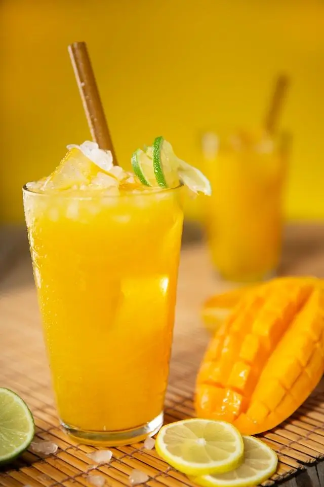
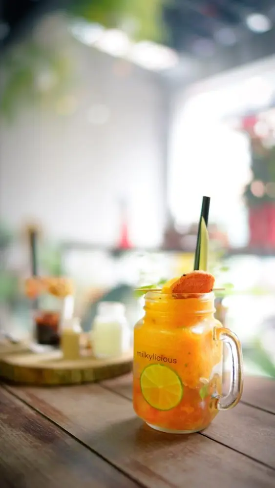

Articles / Recipes
Happy Summer – Let’s make Sparkling Mango Soda!
2024-09-30 · Recipes, Recipes

Can’t get enough of mango? Bring in the tropical vibes, and stave off the summer heat with sparkling mango soda!

Mango soda goodness
When you’re up and about under the sweltering sun, nothing cools you down better than a glass of soda – take a long gulp, and let the heat fizzle away with the bubbly drink!
To take this to the next level, simply add mango! The sweet, fragrant mango mingles with the fizzy soda, creating a sensation that tingles your tastebuds in more ways than one.
As you enjoy this refreshing drink, take some time to admire its looks too!
The mango syrup creates a layered, gradient effect with the soda, while tiny bubbles drift playfully upwards to foam gently on top. With a few slices of mango and colourful toppings, you’ll have an eye-catching drink in no time!


The best part of all this? It’s very easy to make!
With only a few ingredients needed, you can put the drink together in a couple of minutes. Enjoy this beverage yourself, or treat your family and friends to a mango-tastic patio party!

Sparkling mango soda
It’s sweet, it’s sparkly, it’s spectacular! Mango and soda join hands to create this thirst-quenching tropical treat.
What you’ll need
How to make
Pour the soda water into a glass, then add the ice cubes
Carefully pour in the mango syrup. When done right, it should form a layer on top
Garnish with sliced mango. Enjoy!
Try pairing this drink up with different toppings, such as rainbow jelly, crystal boba or aloe vera. Alternatively, mix and match with other fruit syrups, such as passion fruit or lemon!
Give it a try!
Ready to get started with some mango-filled, refreshing drinks? We got you covered, pick up the ingredients with us!